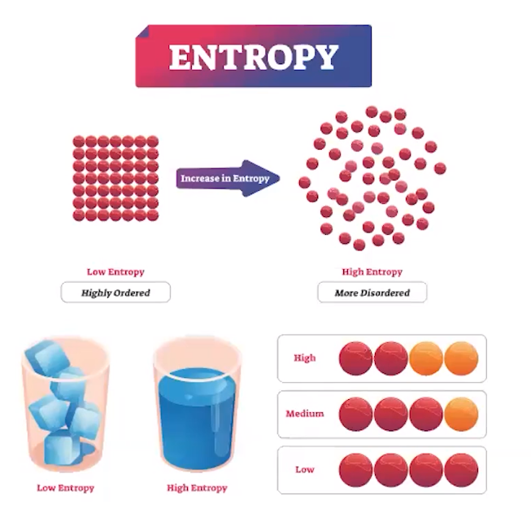

{width="8.59375in" height="0.3541666666666667in"}
{width="4.53125in" height="4.375in"}
Entropy = disorder/dispersal
Increases when matter becomes more dispersed
Example: phase changes from solid => liquid, liquid => gas
Gases: Entropy increases when there is an increase in volume
If moles (and therefore volume) of gaseous products > moles of gaseous reactants:
<!-- -->
Also increases when energy becomes more dispersed
According to the Kinetic Molecular Theory, the distribution of kinetic energy among the particles of a gas broadens as the temperature increases
<!-- -->
Entropy increases as temperature increases